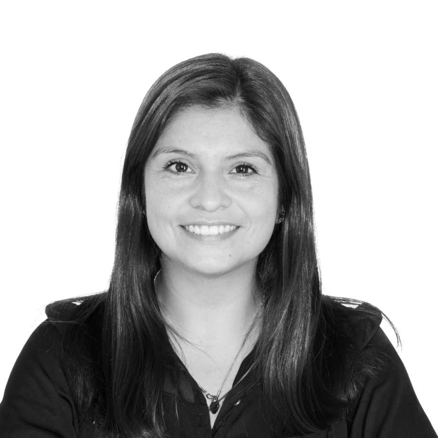
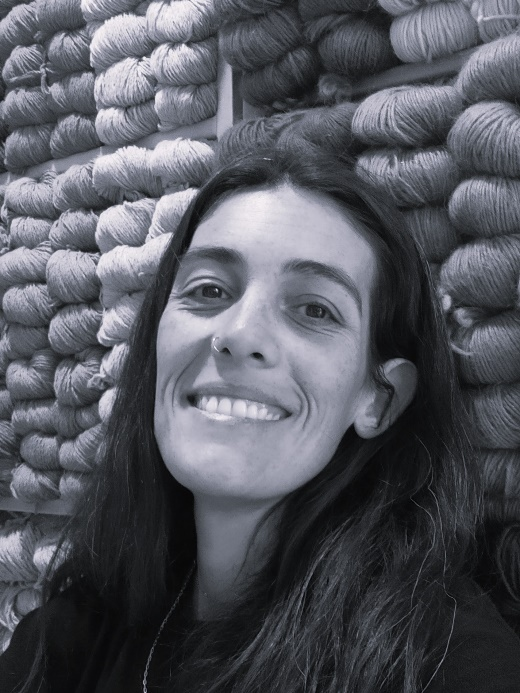
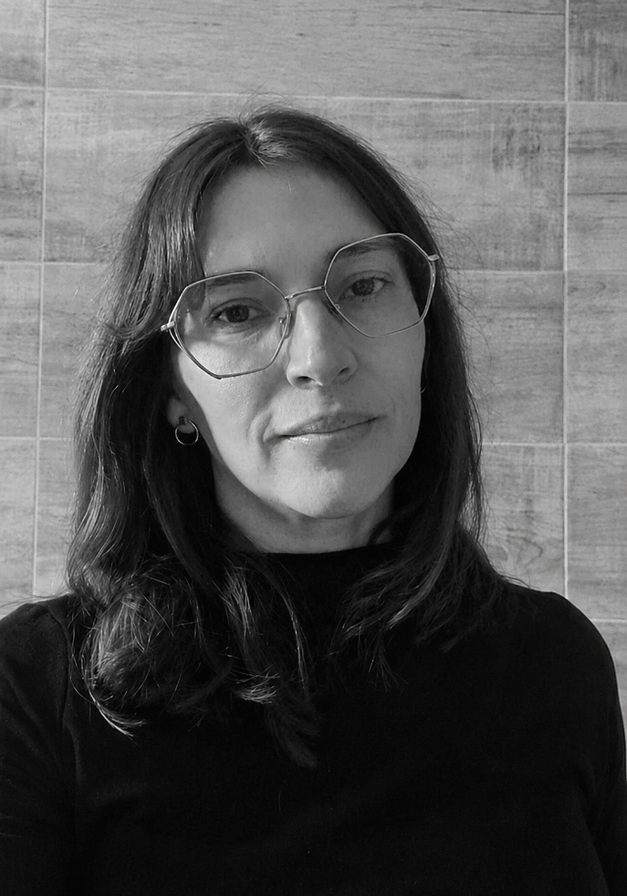
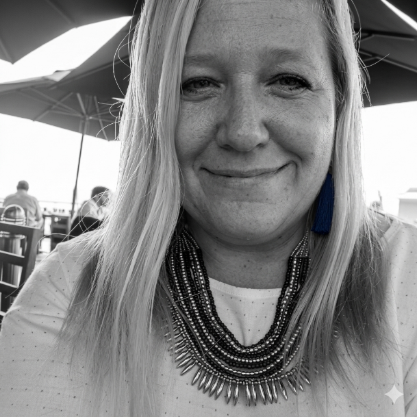

Diseño industrial y formación
El diseño industrial es una herramienta estratégica del sistema productivo nacional, porque permite que la economía se reactive y, en consecuencia, se incorpore mano de obra a la industria, se mejore el valor de las manufacturas y se compita con éxito frente a los bienes importados.
Como diseñador o diseñadora es posible proyectar y representar procesos de fabricación ligados a problemáticas y necesidades vinculadas a la comunidad, la región y el país, desde una óptica novedosa y desprendida de viejos postulados.
La carrera ofrece un título intermedio de técnico con tres orientaciones: Metales Básicos y Productos del Metal; Textil, Prendas de Vestir y del Cuero; y Maquinarias, Equipos y Vehículos Automotores.
- Adquirir competencias para resolver problemas con una visión reflexiva e integradora.
- Participar en la formación de PYMES afines a la orientación o integrarse como técnicos en empresas de mayor envergadura.
- Analizar situaciones de mercado, requerimientos y problemáticas de comercialización vinculadas al mercado interno y al MERCOSUR.
Taller de Diseño III
En la materia Taller de Diseño III, orientación textil, de la Tecnicatura en Diseño Industrial, se abordan contenidos teóricos y prácticos en relación con el diseño y las tecnologías de estampado y teñido.
Los estudiantes concretan proyectos de diseño de series de textiles estampados y/o teñidos, teniendo en cuenta posibilidades y requerimientos técnico-productivos, simbólicos, funcionales y formales, además de tendencias y necesidades del usuario.
Trabajo práctico
Para el trabajo práctico “Florecen pañuelos, florecen flores”, se realizó hincapié en tecnologías, composición y desarrollo de producto a partir de una estampa única.
- Abordar tecnologías semi industriales de trabajo en estampería por transferencia.
- Desarrollar un producto a partir del diseño de una estampa única.
- Aplicar criterios compositivos propios de estampas emplazadas, considerando la moldería del producto soporte.
Laboratorio de Diseño LAD
En el Laboratorio de Diseño LAD se busca acompañar y articular con las carreras vinculadas al diseño de la Universidad Nacional de Lanús, mediante espacios que permitan visibilizar actividades de I+D, académicas y de experimentación. En este caso, desarrolló el espacio de muestra virtual con el objetivo de difundir los resultados del trabajo práctico, junto con los procesos creativos y proyectuales de los estudiantes de Taller de Diseño III, orientación textil.
Laboratorio de Diseño LAD
Desde el LAD se desarrollan herramientas de planificación, diagnóstico, desarrollo y seguimiento de proyectos y emprendimientos. El espacio promueve la gestión del diseño, articula con empresas, instituciones y equipos interdisciplinarios, y participa en proyectos de investigación, desarrollo e innovación vinculados a diseño, tecnología, producción, accesibilidad y discapacidad.
Equipo docente
El equipo docente articula investigación, práctica proyectual, tecnología textil, sustentabilidad y transferencia al medio productivo, acompañando el desarrollo conceptual y material de las propuestas.

Taller de Diseño 3
Diseñadora Textil con especialidad en Investigación en el área del diseño textil. Actualmente en la dirección de proyecto vinculado a la innovación en sustentabilidad de nuevos biotextiles. Experimentación en la producción de biotextiles biodegradables a partir de descartes orgánicos. Participación en proyectos de investigación sobre incorporación de tecnología portable en textiles e indumentaria. Asimismo, en otros proyectos sobre teñido de cartas de color para textiles en restauración, y elaboración de hilado a partir de la chala de maíz. Profesora adjunta en la Licenciatura en Diseño Industrial, Universidad Nacional de Lanús. Diseñadora en el Centro de Diseño Industrial de Instituto Nacional de Tecnología Industrial. Responsable del Biofablab. Investigación, desarrollo y transferencia al medio productivo. Participación y coordinación en proyectos de sobre diseño sustentable, cadenas de valor y materiales sustentables. Diseñadora Textil FADU UBA. Especialización en Gestión de la Tecnología y la Innovación UNSAM, y Diplomatura en Desarrollo Local y Economía Social FLACSO.

Taller de Diseño 3
Diseñadora Textil. Actualmente se desempeña como docente adjunta de la materia Proyecto Textil 1 a 4, Trabajo Final de Carrera e Introducción al Proyecto pertenecientes a la Carrera de Diseño Textil en FADU-UBA. También es docente de las materias Tecnología, materiales y procesos 2 y 3 (Textil) y Taller Textil 2 y 3 pertenecientes a la carrera Licenciatura de Diseño Industrial orientación textil de UNLa. Desde 2014 participa como investigadora en diversos proyectos de investigación dependientes del Departamento de Humanidades y Artes de UNLa donde se han abordado temáticas tales como desarrollo de cartas de color, diseño de nuevos materiales a partir de descartes, sustentabilidad en la cadena de valor textil.

Taller de Diseño 3
Diseñadora industrial, con experiencia en textil e indumentaria.Ayudante de cátedra en la UNLa, en las materias de Tecnología,materiales y procesos, prácticas pre-profesionales. Analista deproducción en una marca de indumentaria, en el ámbito privado. Medesarrollo en el campo de la indumentaria en orientación ycoordinación de proyectos. Responsable en planificación deproducción, teniendo habilidades en diseño y sus tecnologías.Optimizando procesos productivos, para mejorar la eficiencia ycalidad de la producción.

Laboratorio de Diseño LAD
Coordinadora General del Laboratorio de Diseño LAD. Especialista en Metodología de la Investigación Científica, Maestranda en esa misma carrera y programadora web, Responsable de la coordinacion de Investigación del Departamento de Humanidades y Artes de la Universidad Nacional de Lanús. Fundadora del HUB de Diseño Industrial de la UNLa, Directora por Diseño Industrial de la Revista académica: DSB-LAD, Diseño sin Barreras, además de ser autora de diversos artículos académicos con referato, libros y capítulos de libros. Directora de Diversos proyectos de Investigación y Becarios. Desarrolla herramientas de planificación, diagnóstico, desarrollo y seguimiento de proyectos y emprendimientos. Promotora de la Gestión del Diseño. Articula con empresas, instituciones y equipos interdisciplinarios. Evaluadora de proyectos de investigación, desarrollo e innovación en diseño, tecnología, producción accesibilidad y Discapacidad. Evaluadora de Tesis de grado y posgrado. Participa en comités científicos de congresos nacionales e internacionales vinculados a diseño, tecnología, accesibilidad y discapacidad. Es docente en la UNLa en carreras de grado y posgrado.
Investigación y producción textil
El equipo desarrolla investigación en el área del diseño textil, con proyectos vinculados a innovación en sustentabilidad, nuevos biotextiles, producción de materiales biodegradables a partir de descartes orgánicos, incorporación de tecnología portable en textiles e indumentaria, cartas de color para restauración y elaboración de hilados a partir de fibras vegetales.
Docencia y transferencia
La práctica docente se vincula con materias proyectuales y tecnológicas del campo textil, tanto en la Universidad Nacional de Lanús como en otros espacios académicos. La experiencia del equipo incluye participación en proyectos de investigación sobre desarrollo de nuevos materiales, sustentabilidad en la cadena de valor textil y transferencia al medio productivo.
Diseño industrial, textil e indumentaria
El equipo cuenta también con experiencia en diseño industrial, textil e indumentaria, prácticas pre-profesionales, planificación de producción y coordinación de proyectos. Estas trayectorias aportan herramientas para optimizar procesos productivos y mejorar la eficiencia y calidad de la producción.